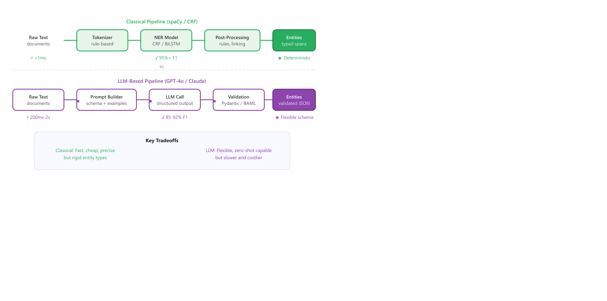

"Free text in, structured rows out. Forty years of NLP can be summarized in eight words and a column count."
Token, Schema-Stable-Outputter AI Agent
34.1.1 The Information Extraction Landscape
Named Entity Recognition is one of the oldest tasks in NLP and the only one that LLMs have made simultaneously easier and harder. Easier because a GPT-4 call extracts entities with no training data; harder because the same call sometimes invents a perfectly plausible entity that does not appear in the document at all.
Information extraction turns free text into structured records. Three flavors matter. NER (named entity recognition) tags spans like PERSON, ORG, LOCATION, DATE; it builds on the text-representation foundations from Chapter 1. Relation extraction pulls the verb between entities, "Alice works at Acme Corp" becomes (Alice, works_at, Acme Corp). Event extraction records what happened, when, where, to whom. Each task ships in three configurations: classical NLP (spaCy, CRF), LLM prompting, or both.
This chapter covers three interrelated information extraction tasks: NER (typed entity spans like PERSON, ORG, DATE), Open IE / relation extraction (subject-relation-object triples), and event extraction (triggers with typed argument roles). Every IE design decision is governed by a single axis: classical NLP tools (spaCy, CRF, Stanford OpenIE) deliver sub-millisecond latency, 95%+ F1, and zero hallucination on fixed entity types, while LLM-based extraction delivers flexible schemas, implicit-relation handling, and zero-shot novelty at 100ms-2s latency and per-document cost. The production answer is almost never one extreme; the rest of this chapter shows how to combine them.
Prerequisites
This section assumes basic familiarity with NLP tasks from Section 1.1, the LLM prompting vocabulary from Section 15.1, and an intuition for the structured-output patterns introduced in Section 15.6.
Pure classical IE (spaCy, CRF models) is fast and precise but rigid: it can only extract entity types it was trained on. Pure LLM-based IE is flexible but expensive, slow, and prone to hallucinating entities that do not exist in the source text. The hybrid approach uses classical NLP for well-defined, high-volume entity types (dates, names, addresses) and reserves the LLM for novel or complex extraction tasks (sentiment-bearing phrases, implicit relationships, domain-specific entities). This mirrors the general hybrid philosophy from Section 13.3: use the cheapest tool that can do the job correctly, and escalate to the expensive tool only when needed.
Always run spaCy's NER first and use its output as context for the LLM call. Passing pre-extracted entities to the LLM (e.g., "spaCy found these entities: [Alice, Acme Corp, 2024-01-15]. Verify these and extract any additional entities the rules missed.") reduces hallucination rates significantly because the model can confirm or correct known entities rather than inventing them from scratch.
The CRF that powers spaCy's classical NER backbone is a linear-chain conditional random field (Lafferty, McCallum & Pereira, 2001). Given a token sequence $\mathbf{x} = (x_1, \ldots, x_T)$ and a candidate label sequence $\mathbf{y} = (y_1, \ldots, y_T)$ over BIO tags, the model defines
$$p(\mathbf{y} \mid \mathbf{x}) \;=\; \frac{1}{Z(\mathbf{x})}\, \exp\!\Bigl(\sum_{t=1}^{T} \mathbf{w}_e \cdot \boldsymbol{\phi}(x_t, y_t) \;+\; \sum_{t=2}^{T} \mathbf{w}_s \cdot \boldsymbol{\psi}(y_{t-1}, y_t)\Bigr),$$
where $\boldsymbol{\phi}$ are emission features (token-level evidence such as embeddings or hand-crafted indicators), $\boldsymbol{\psi}$ are transition features (e.g., the legality of I-PER following O), and $Z(\mathbf{x})$ is the partition function summing over all label sequences. The transition term is what makes CRFs structurally consistent: a naive per-token softmax cannot prevent ill-formed tag bigrams like O → I-LOC, but the CRF assigns zero probability to such transitions when $\mathbf{w}_s$ is trained on real data. Decoding uses Viterbi to find $\arg\max_{\mathbf{y}} p(\mathbf{y} \mid \mathbf{x})$ in $O(T \cdot K^2)$ time for $K$ tag types, which on modern CPUs translates to sub-millisecond inference per sentence and is the source of CRFs' "95%+ F1 at near-zero cost" reputation.
34.1.1.1 Classical IE vs. LLM-Based IE
| Dimension | Classical IE (spaCy, CRF) | LLM-Based IE |
|---|---|---|
| Setup cost | High: labeled data, training pipelines | Low: prompt engineering, few examples |
| Entity types | Fixed at training time | Flexible, defined in the prompt |
| Latency | Sub-millisecond per document | 100ms to 2s per document |
| Cost per doc | Negligible (CPU inference) | $0.001 to $0.05 per document |
| Accuracy (common entities) | 95%+ F1 on trained types | 85-92% F1 zero-shot |
| Accuracy (novel types) | 0% (needs retraining) | 75-90% F1 zero-shot |
| Output format | Deterministic, typed spans | Requires structured output enforcement |
| Hallucination risk | None (span-based) | Moderate (can invent entities) |
| Context window | Unlimited (streaming) | Limited by model context length |
If you are picking the LLM side of the table above, do not write JSON-parsing boilerplate by hand. instructor patches the OpenAI, Anthropic, and Gemini SDKs to return validated Pydantic objects directly, with automatic retry-on-validation-failure. It is the de facto 2024-26 default for typed LLM extraction and the foundation we build on in Sections 34.2 and 34.3.
Show code
pip install instructor openai pydantic
import instructor, openai
from pydantic import BaseModel
class Entity(BaseModel):
name: str
type: str
def extract_entities(text: str) -> list[Entity]:
client = instructor.from_openai(openai.OpenAI())
return client.chat.completions.create(
model="gpt-4o-mini",
response_model=list[Entity],
messages=[{"role": "user", "content": text}],
)
entities = extract_entities("Alice works at Acme Corp.")
for e in entities:
print(f"{e.name:<12} {e.type}")instructor replace the prompt-builder, JSON parser, and validation loop in the lower pipeline of Figure 34.1.3. The response_model=list[Entity] argument forces the model to return a typed Python list, validated against the Pydantic schema before entities is bound.Consider a production pipeline processing 10,000 documents per day. All-LLM approach: at $0.02 per document (a mid-range GPT-4-class price), the daily cost is 10,000 × $0.02 = $200/day, or roughly $6,000/month. Hybrid approach: if classical NER (spaCy) resolves 70% of documents at near-zero marginal cost and only the remaining 30% (3,000 docs) escalate to the LLM, the daily cost drops to 3,000 × $0.02 = $60/day, a 70% reduction. The classical layer also keeps median latency in the sub-millisecond range, since most documents never reach the LLM. This single piece of arithmetic motivates the hybrid architecture developed in Section 34.3.
Figure 34.1.3 compares these two pipeline architectures side by side.

For each prompt, classify it as NER, relation extraction, or event extraction, and state the expected output schema: (a) "Extract all dates mentioned in this contract"; (b) "Identify acquisitions in this earnings call: buyer, target, amount, date"; (c) "Find every drug-drug interaction documented in the chart and the severity level"; (d) "Pull all author names from this bibliography".
Answer Sketch
(a) NER, schema: [{span, start, end, type: DATE}]. (b) Event extraction, schema: [{trigger: "acquired", buyer, target, amount, date}]. (c) Relation extraction, schema: [{drug_a, drug_b, relation: "interacts_with", severity}]. (d) NER, schema: [{span, type: PERSON}]. The schema decision drives whether you need a flat span list, a triple, or a typed-role frame.
Prompt GPT-4 to extract PERSON entities from a 300-word news article. Then verify every returned name appears verbatim in the source text (case-insensitive substring match). Repeat for 20 articles and report the fraction of hallucinated entities. Expected range: 1 to 8%.
Answer Sketch
Implement: all_persons = [p for p in extracted if p.lower() in source_text.lower()]. Common hallucination patterns: capitalization-normalized variants of correct names (acceptable), invented co-authors not in the text (not acceptable), or wikipedia-implied "the X family" when only "X" appears (not acceptable). The substring check undercounts position-shifted spans, so a stricter version uses a span match. This is exactly the kind of guardrail that motivates the hybrid IE architecture in Section 34.3.
What's Next?
In the next section, Section 34.2: Classical and Open Information Extraction, we build on the material covered here.